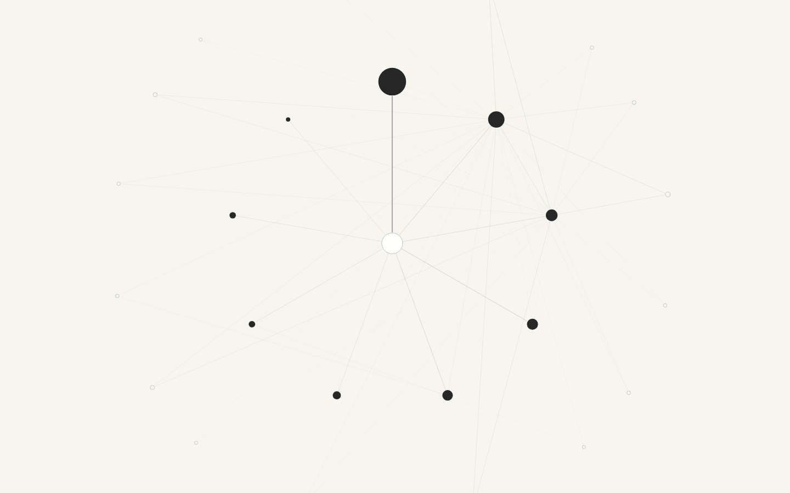

Fides soli veritati
UFO Files
An open research space for tracing people, programs, places, claims, documents, and signals through the public UAP record.
About the Project
A public map of a fragmented record.
UFO Files turns public documents, transcripts, reports, and research notes into structured evidence that can be searched, compared, and revisited. The work is designed for slow reading and repeat investigation, not hot takes.
Source data and derived graph outputs are inspectable.
Claims stay connected to documents and transcripts.
The graph improves as new releases and corrections arrive.

Relationship Graph
Move through the archive as a living network.
Explore recurring entities, locations, institutions, craft, technologies, documents, and events. The graph is built for context: zoom from a category into a neighborhood, then back out to see the larger shape.
Launch Graph
Dog Whistle
Tune language until patterns become visible.
Dog Whistle is a companion space for signal, rhetoric, and recurring phrase work. It treats language as material: something to isolate, compare, and hear across sources.
Open Dog Whistle
Meditation
A quieter interface for attention and practice.
The meditation app sits beside the research tools as a place for timing, breath, and disciplined observation. It keeps the project grounded in attention rather than noise.
Open MeditationContact
Send documents, corrections, leads, or provenance notes.
Anonymous tips are welcome. Corrections and source improvements can also be proposed through GitHub.